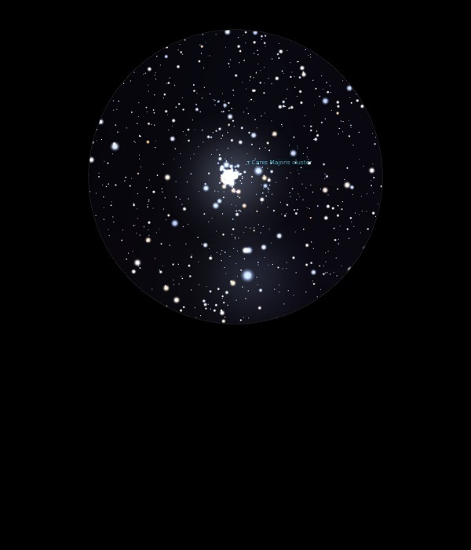

NGC 2362
Open
Cluster in Canis Major
NGC 2362
Mag 4.1
Tau Canis Majoris Cluster, Caldwell 64
01/03/14
Wow, considering how
low in the Southern sky it is this cluster is great in 12mm
Tight and bright ball surrounding t Canis Majoris at Mag
4.85 which really sets the cluster off, and a hint of
nebulosity too!
26/01/17
A tiny and very faint Open Cluster with a hint of nebulosity
in its stardust
It would be very difficult to locate were it not for the
fact that its brightest member, which outshines all the rest
combined and sits right in the middle, is T CMa, 30 CMa, HIP
35415 at Mag 4.85 which looks great and appears to light up
the whole FOV, especially when zoomed in
I can see why Sir Patrick Moore rated it but of course he
had a fantastic southern horizon, as I do now the fir
tress have gone!